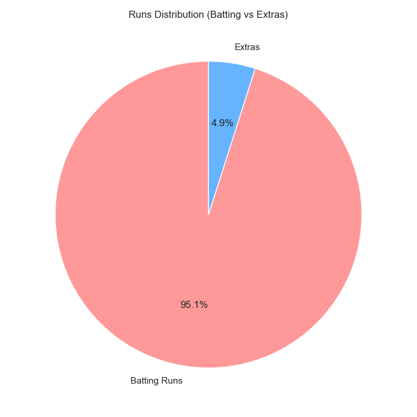
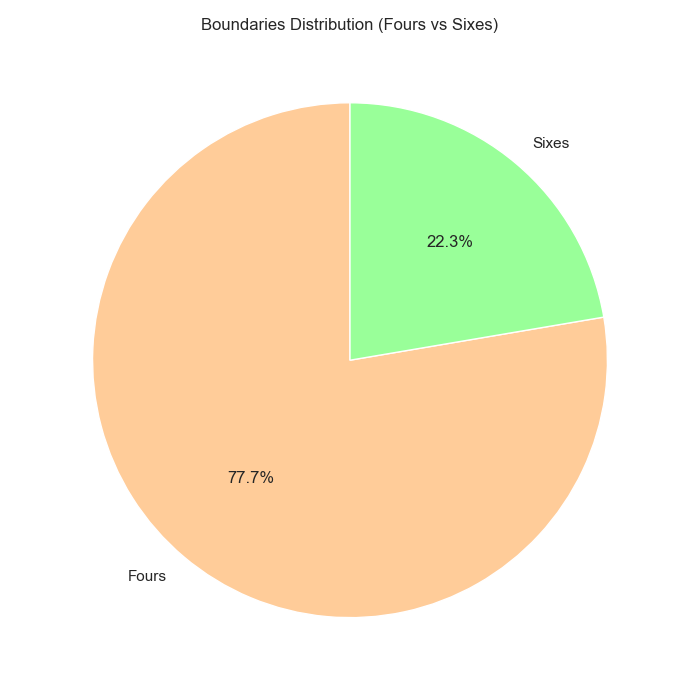
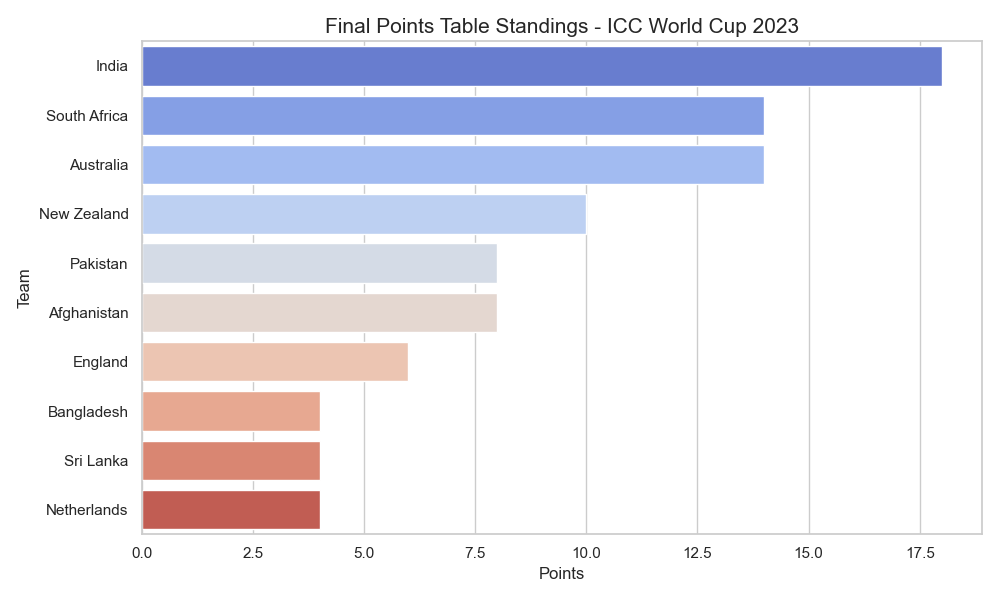
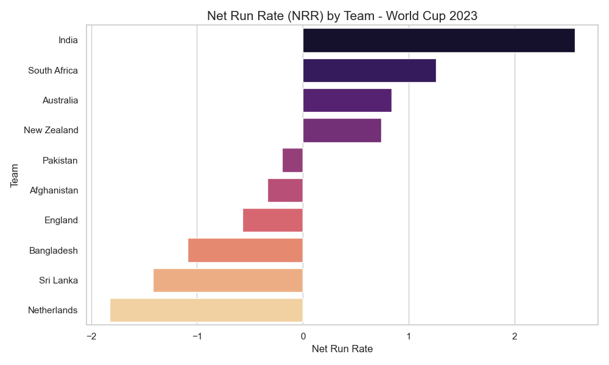
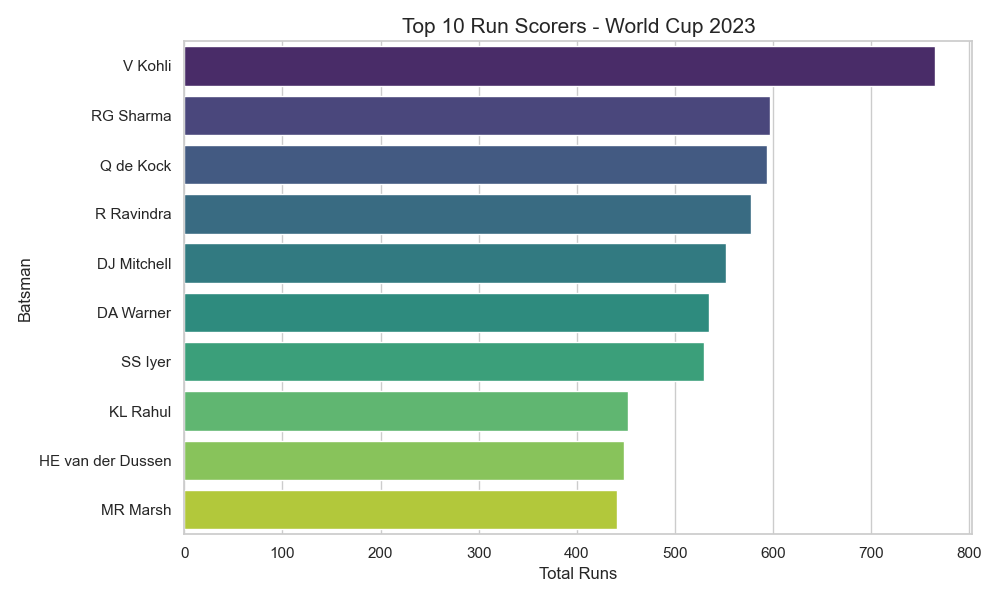
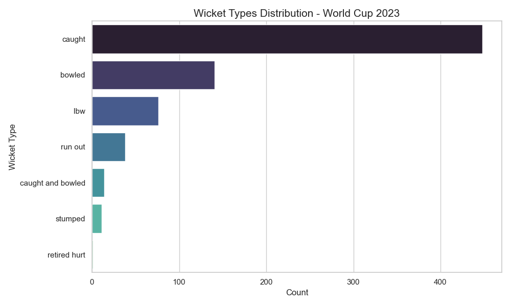
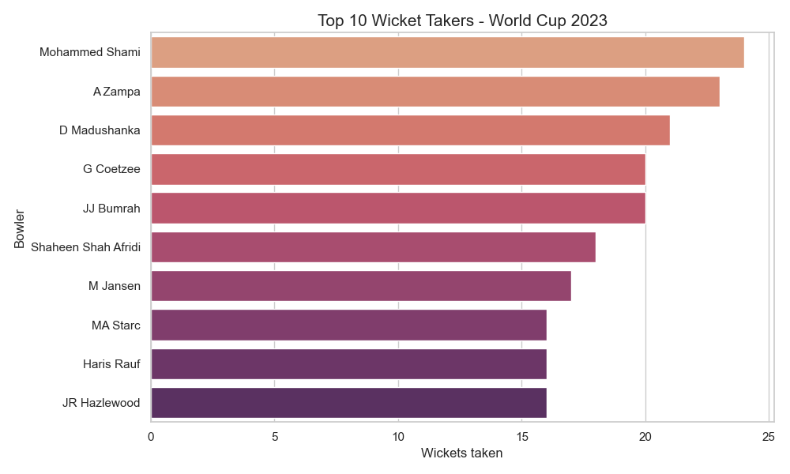
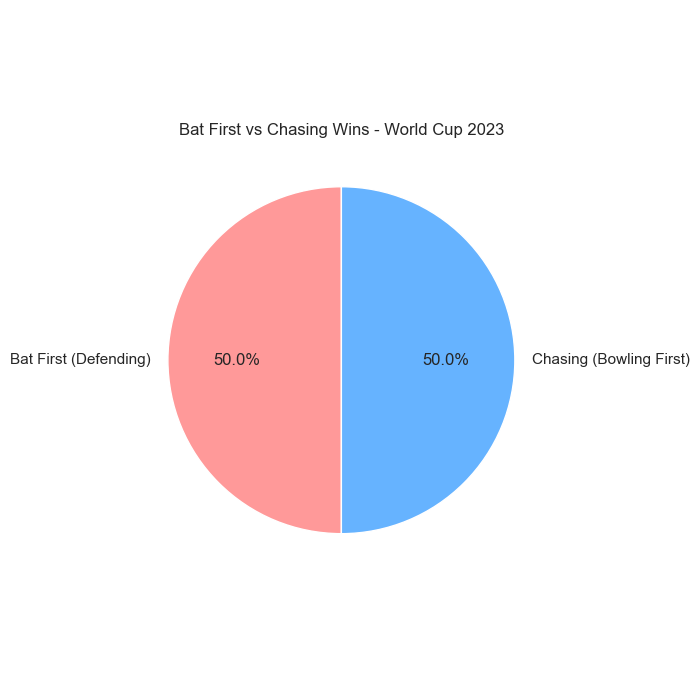
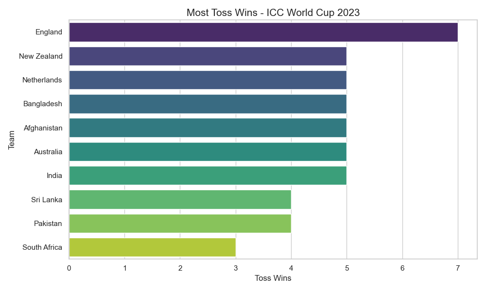

Comprehensive Exploratory Data Analysis & Visualization
Deogiri College (Autonomous), Chhatrapati Sambhajinagar
Total Runs Scored
Total Wickets Taken
Total Boundaries
Extra Runs

Batting Runs vs Extras

Fours vs Sixes Ratio
This report presents an in-depth analysis of the 2023 ICC World Cup. By processing raw match and ball-by-ball data, we've extracted meaningful insights into team strategies, player performances, and tournament dynamics.
The points table reflects the dominance of top teams. India led the table with a perfect winning record. However, Net Run Rate (NRR) reveals the slim margins between other top contenders.


Analysis of high-scoring innings and total runs reveals the tournament's top consistent performers. Virat Kohli and other top-order batsmen led the subcontinental conditions.

Understanding how wickets were taken helps in identifying the effectiveness of various bowling styles. "Caught" remained the most common mode of dismissal.


Does winning the toss guarantee victory? Our analysis shows a remarkably balanced outcome between batting first and chasing. However, seeing which teams won the most tosses gives insight into captaincy luck during the tournament.

Win % by Strategy

Most Toss Wins by Team
The 2023 World Cup provided a rich dataset for EDA. Our analysis highlights that while individual brilliance (as seen in player stats) is vital, team consistency (reflected in the points table) and adaptability to chasing or defending are what defined the ultimate champions.